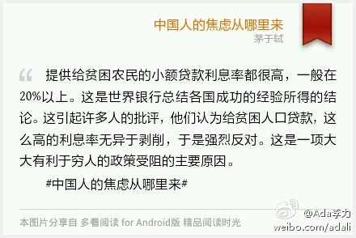

如果社区运营不是我的工作，我自问是否会把社区活动当做一种生活方式？ 应该不会，我会更多宅在家里，把业余时间花在亲人和朋友身上。[呵呵]

Ada李力
2013-07-20

Ada李力
2013-07-20

@steadwater:
不经意发现，今天是我离开微软3年的日子，3年经过下山再上山的过程，从传统IT的小山头走到了互联网的小山头，3年充分理解了社会的多元化，在思维能力，知识驾驭能力，团队领导能力方面的收获都远大于我在MS的6年，眼界和心胸也变得开阔。总结一下，希望年轻的朋友趁早离开大公司的温床，拥抱激情的自我

Ada李力
2013-07-20
#多看书摘# 根据普遍的边际收益递减规律。随着人们物质享受的不断扩大和满足，通过交换所获得的物质享受逐渐退居次要地位，人们将用更多的时间和精力去追求不能通过交换的满足，如健康、寿命、友谊、环境、求知、创造等。 #中国人的焦虑从哪里来#

Ada李力
2013-07-20
提供给贫困农民的小额贷款利息率都很高，一般在20%以上。这是世界银行总结各国成功的经验所得的结论。这引起许多人的批评，他们认为给贫困人口贷款，这么高的利息率无异于剥削，于是强烈反对。这是一项大大有利于穷人的政策受阻的主要原因。 #中国人的焦虑从哪里来#
- 